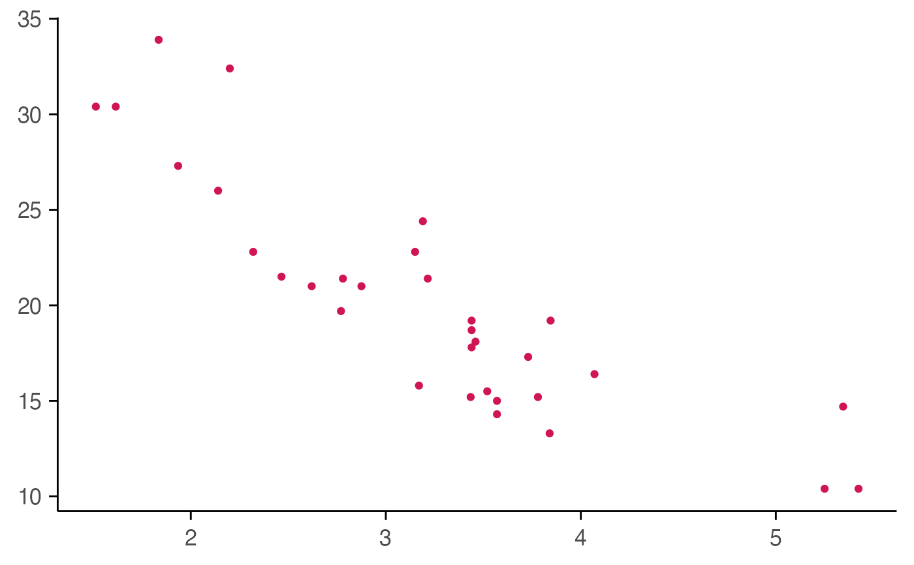

A custom ggplot2 theme optimized for macpie figures, with clean backgrounds,
consistent text sizing, and configurable axis/legend elements.
Usage
macpie_theme(
show_x_title = TRUE,
show_y_title = TRUE,
legend_position_ = "bottom",
x_labels_angle = 0
)Examples
library(ggplot2)
ggplot(mtcars, aes(wt, mpg)) +
geom_point(color = macpie_colours$high) +
macpie_theme()
